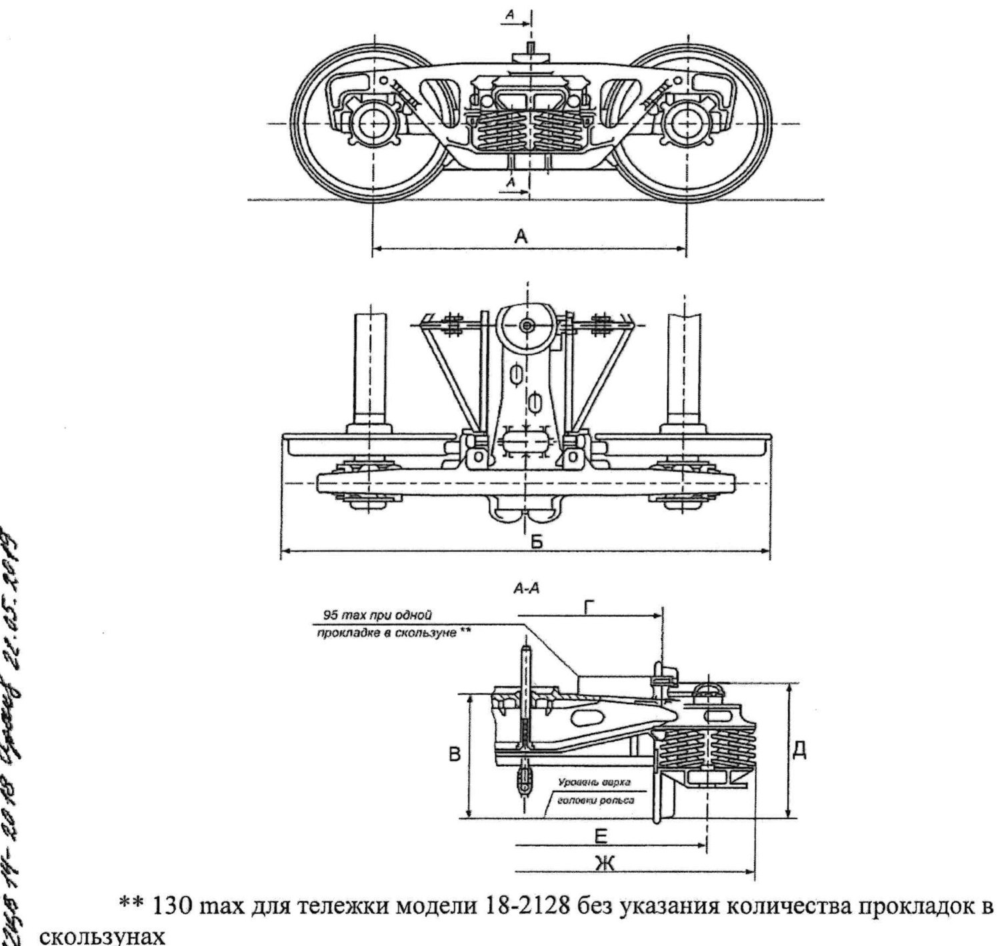

Aravacha modellari va texnik xarakteristikalari
Tip 2 aravachaning tarkibiy qismlari, detallar materiali, 2.1-jadval bo'yicha texnik ko'rsatkichlar va gabarit o'lchamlar.
Bu darslik nimaga asoslangan
Oldingi o'nta darslik РД 32 ЦВ 050-2020 — o'lchash metodikasi asosida edi. Bundan keyingi darsliklar РД 32 ЦВ 052-2009 «Rahbariyat» hujjatiga asoslanadi. Farqi shunda: metodika qanday o'lchashni aytadi, Rahbariyat esa me'yorning o'zini, ta'mir texnologiyasini va qanday qaror qabul qilishni belgilaydi.
Tip 2 aravachaning tarkibiy qismlari (2.2-band)
ГОСТ 9246 bo'yicha ikki o'qli uch elementli tip 2 aravacha quyidagilardan iborat:
- Uch elementli rama — ikkita yon rama va skolzun tayanchlari bilan nadressor balkasi;
- G'ildirak juftlari buksa uzellari bilan yoki adapter ostidagi kasseta tipidagi podshipniklar bilan;
- Ressor osmasi — tashqi va ichki prujinalar, friksion ponalar va friksion plankalar;
- Tormoz richag uzatmasi — richaglar, tormoz bashmaklari bo'lgan triangellar va ularning osmalari;
- Valiklar, shaybalar, shplintlar — richag uzatmasini yon ramalar va nadressor balkasiga bog'lovchi detallar;
- Shkvoren (shkvorеn);
- Yechiladigan yeyilishga chidamli elementlar — М 1698 ПКБ ЦВ, С 03.04 loyihalari yoki 1699.00.000 loyihasi bo'yicha.
To'rt o'qli 18-101 modeli ikkita 18-100 aravachasidan iborat bo'lib, ular vertikal richaglar o'lchami bilan farq qiladi va biriktiruvchi balka (соединительная балка) bilan bog'lanadi (2.3-band).

Detallar qanday materialdan tayyorlanadi (2.4-band)
| Detal | Material |
|---|---|
| Yon ramalar | 20ГЛ, 20ГФЛ, 20ГТЛ po'lati ГОСТ 32400, ОСТ 32.183-2001 yoki ОСТ 24.153.08-78 |
| Nadressor balkasi | 20ГЛ, 20ГФЛ, 20ГТЛ po'lati ГОСТ 32400, ОСТ 32.183-2001 yoki ОСТ 24.153.08-78 |
| Ressor komplekti prujinasi | 55С2, 60С2, 55С2А, 60С2А, 60С2ХА, 60С2ХФА, 65С2ВА (ГОСТ 14959) yoki 55РП, 55ПП (ТУ 1150-019-71613522-2009) |
| Tormoz richag uzatmasi detallari | Ст3 ГОСТ 380, 09Г2, 09Г2С va boshqalar (prokat uchun); 15Л, 20Л, 20ГЛ, 25Л (quyma detallar uchun) |
| Triangel ramasi | ГОСТ 4686 da ko'zda tutilgan po'latlar |
| Burilmaydigan bashmak va triangel uchliklari | 15Л, 20Л, 25Л, 20 ГЛ, 20ФЛ, 20Г1ФЛ (ГОСТ 977) yoki 20ГЛ (ГОСТ 22703-2012) |
| Sharnirli birikma o'qlari | 40, 45 po'lati ГОСТ 1050-2013 |
| Triangel osmasi | 15 po'lati ГОСТ 1050 |
| Shkvoren | Ст 3 сп ГОСТ 380 yoki ГОСТ 1050 bo'yicha po'lat |
| Kompozitsion kolodkalar | ТИИР-300, ТИИР-303 yoki boshqa ishlab chiquvchilar KD si bo'yicha |
2.1-jadval — asosiy texnik xarakteristikalar
| Ko'rsatkich | Tip 2 ГОСТ 9246 | 18-101 modeli |
|---|---|---|
| Yo'l kengligi, mm | 1520 | 1520 |
| O'qlar soni, dona | 2 | 4 |
| Konstruktiv harakat tezligi, km/soat | 120 | 120 |
| Ressor komplekti | friksion-prujinali | friksion-prujinali |
| Prujinalar balandligi erkin holatda, mm | 249 (+6/−3)* | 249 (+7/−2) — 1989–2012 y. / 249 (+6/−2) — 2012–2015 y. |
| Tashqi/ichki prujina prutogi diametri, mm | 29/20** | 29/20** |
| Prujina o'ramlari soni: to'liq / ishchi | 5,4±0,13 / 7,6±0,13 va 3,9 / 6,1 | 5,4±0,13 / 7,6±0,13 va 3,9 / 6,1 |
| Tashqi/ichki prujina og'irligi, kg, kam emas | 13,6 / 6,2 | 13,6 / 6,2 |
| Tashqi prujinaning tashqi/ichki diametri, mm | 199 / 141 ± 2,5 | 199 / 141 ± 2,5 |
| Ichki prujinaning tashqi/ichki diametri, mm | 131 ± 1,5 / 91 | 131 ± 1,5 / 91 |
| Aravacha ramasi | bog'lanmagan (без связевая) | bog'langan (связевая) |
| O'q turi | РУ1, РУ1Ш | РУ1, РУ1Ш |
| Aravacha massasi, t | 5 dan ko'p emas | 12,0 |
* — 18-100 modeli uchun prujina balandligi 249 (+7/−2) mm (1989–2012 y.) / 249 (+6/−2) mm (2012–2015 y.).
** — 18-9597 uchun 30/21 mm; 18-9770, 18-2128, 18-7055, 18-9801, 18-9918, 18-9922, 18-1750 uchun 29/20 yoki 30/21 mm ga ruxsat; 18-100 va 18-101 uchun 2015 y.gacha tayyorlangan tashqi prujinalar 30 mm, ichki prujinalar 1989 y.gacha — 19 mm, 1989–2015 y. — 21 mm.
2.2-jadval — tayyorlashdagi gabarit o'lchamlar
| Belgi | Tip 2 ГОСТ 9246 | 18-101 modeli |
|---|---|---|
| А | 1850* | 3200 |
| Б | 2864** | 6056 |
| В | 806 (+12/−21)*** | 858 (+12/−21) |
| Г | 1524**** | 1524 |
| Д | 844,5***** | 844,5 |
| Е | 2036****** | 2036 |
| Ж | 2590 | 2590 |
* — 18-1750 uchun 1850 ± 20 mm.
** — 18-7055, 18-2128, 18-1750, 18-100 modellari uchun 2863 mm.
*** — 18-9801, 18-9918 uchun 806 (+9); 18-1750 uchun boshqa dopusk.
**** — 18-2128, 18-9801, 18-1750, 18-9770, 18-9918, 18-100 uchun 1524 ± 6 mm.
***** — 18-6941 uchun 846,5 mm.
****** — 18-1750, 18-9770 uchun 2036 ± 6 mm; 18-9896, 18-9918 uchun 2036 ± 10 mm.
Kim ta'mirlashga haqli (3.2-band)
Kapital, depo va joriy ajratma ta'mirda aravachalarni ta'mirlash huquqi shu Rahbariyatni, mahalliy texnologik jarayonni va aravachalar ta'mirini tashkil qilishni bilish bo'yicha imtihon topshirgan shaxslarga beriladi. Tekshiruv imtihonlari har yili o'tkaziladi.
Nazorat savollari
Avval o'zingiz javob bering, so'ngra tekshiring.
1. Uch elementli aravacha qaysi uchta katta quyma detaldan iborat?
2. Yon rama va nadressor balkasi qaysi po'latlardan tayyorlanadi?
3. Tip 2 aravachaning konstruktiv harakat tezligi va massasi qancha?
4. Elektropayvand bilan qotiriladigan yeyilishga chidamli kontakt elementlari qanday qattiqlikka ega bo'lishi kerak?
5. Aravacha ta'mirlash huquqini kim oladi va imtihon qanchalik tez-tez o'tkaziladi?
Manba: РД 32 ЦВ 052-2009 — ГОСТ 9246-2013 bo'yicha zazorli yon skolzunli tip 2 yuk vagon aravachalarini ta'mirlash. Umumiy ta'mir rahbariyati (2026-yil 1-iyuldan amaldagi tahrir).
Andijon vagon deposi · telejka ta'mirlash sexi.